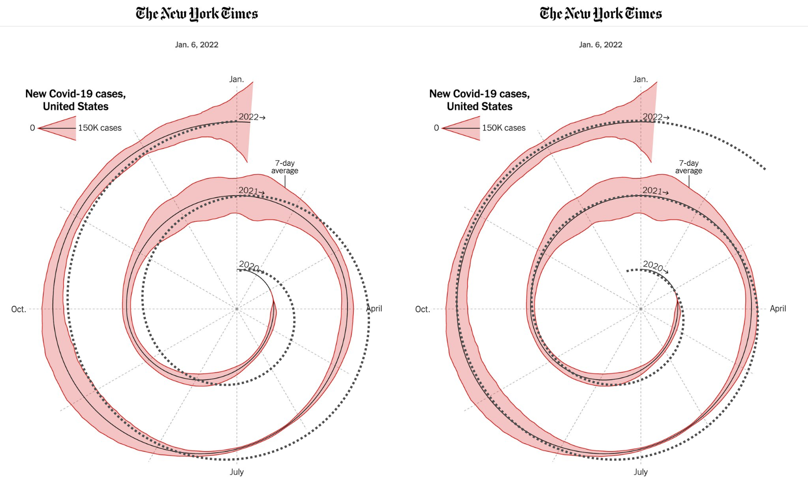
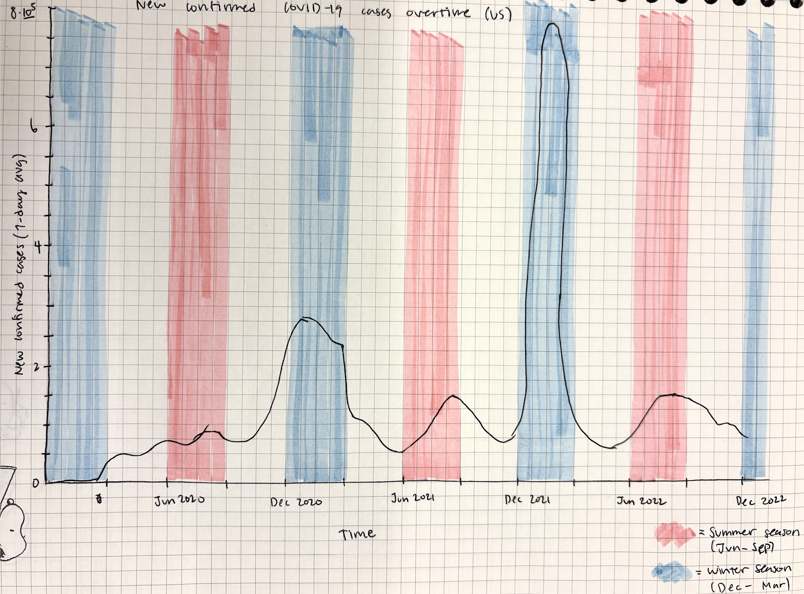
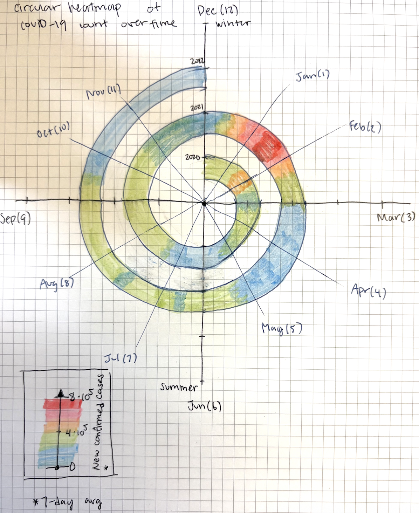
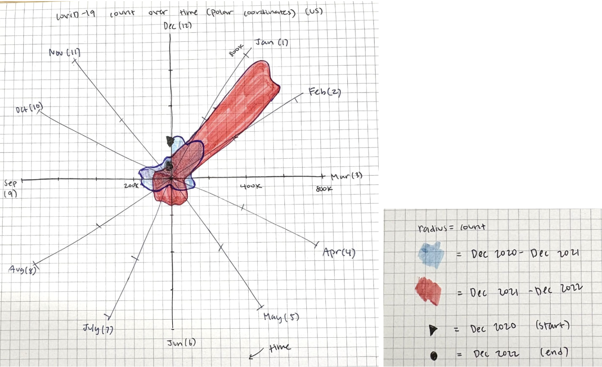
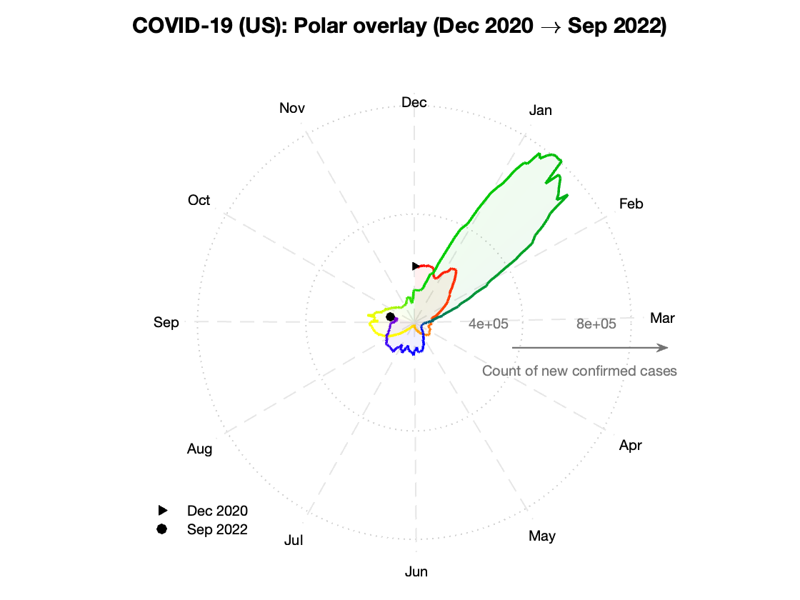
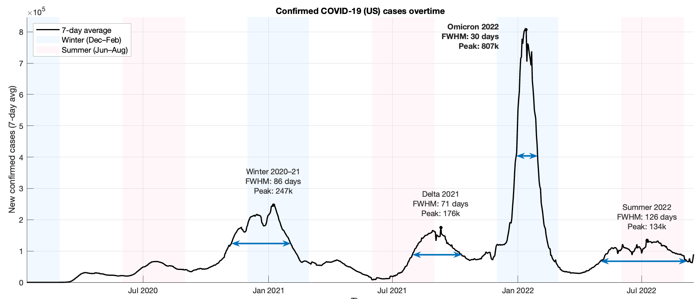

Reading & Critique

Insights about the data/visualization:
- The seasonality of the trends is immediately visible across years. Because January aligns with January, July with July, etc., peaks line up angularly. I can directly compare winter-to-winter or summer-to-summer behavior without scanning horizontally across separate panels. In a conventional stacked time-series plot, you would have to visually "jump" across years to compare January 2021 to January 2022. Here, they sit on the same radial axis.
- The repeated winter amplification pattern becomes visually structural rather than inferential. This supports pattern recognition of repeated temporal structures. The eye naturally detects circular periodicity. The repeated winter spikes align along the same radial sector, reinforcing the cyclical nature of transmission dynamics.
- The visualization encodes temporal continuity across years without artificial breaks. Traditional year-separated plots (small multiples) impose visual discontinuities at December-January boundaries. In this spiral, December flows directly into January as a natural continuation, emphasizing pandemic persistence rather than "calendar resets." That continuity supports interpretation of wave carryover and policy lag effects.
- I think what the visualization does well is it provides an intuitive mental model of "waves layered in time." The spiral makes clear that 2021 does not overwrite 2020, it wraps around it. This layering helps conceptualize compounding public health burden and the escalation in baseline case levels year-over-year.
Design Critique:
The core problem is that the chart optimizes for affect and novelty more than for measurement. Spiral/radial encodings make it harder to do the two things readers most want in a COVID cases chart: (1) read approximate values at specific dates, and (2) compare slopes/acceleration between waves. Precise estimation/comparison becomes difficult, and the geometry can distort perceived magnitude, like how later years can look "bigger" partly because they are drawn on a larger radius. The outward rings carry a built-in "larger circle = larger thing" perceptual cue even if the data values were identical.
In fact, the spiral appears shifted and "wobbly," likely due to an aesthetic adjustment that breaks the expectation of a clean, centered spiral. Even subtle off-centering matters because it introduces an additional non-data variation in curvature that viewers cannot help but read as a signal. A critique online overlaid an Archimedean spiral to demonstrate this off-centeredness.

Another issue is the time mapping. Most people conceptualize months linearly (a timeline, calendar rows, or seasons), not as directions in space. So when April appears on the right side of a circle, the viewer must consciously decode: right = April. That adds cognitive load. It is not impossible, but it is not pre-attentive. In a spiral, time moves angularly and radially at once. Viewers must parse two transformations simultaneously: angle = month within year, radius = case magnitude, and outward progression = later year. That triple encoding is elegant but cognitively expensive. However, if the purpose is rhetorical, especially in an opinion piece like this one, the spiral can serve a different function. It visually reinforces the idea of recurrence. Cycles, repetition, and escalation are communicated geometrically.
Visualization Sketches

Design Rationale for Sketch 1:
-
Motivation: to improve quantitative precision and slope readability while eliminating the radial distortions introduced by the spiral format.
- Return to a conventional linear time axis -> make interpretation cognitively effortless and analytically reliable.
- The vertical blue and red bars are supposed to be like a shaded region of the chart to represent seasons -> cyclic nature of the data
-
Communicate exact magnitudes of case counts, clearly differentiate acceleration patterns.
- sharp Omicron spike in Jan 2021 compared to prior waves
- winter seasonality through vertical shading
- preserve continuity across calendar boundaries without artificial breaks.
- Rationale: This approach directly addresses the critique of the spiral because linear time is intuitive and pre-attentive, slopes are visually legible, and viewers are not required to decode angular positions or interpret potentially misleading area thickness from ribbons. What worked well is the clarity of value comparison, the ease of identifying Omicron's steep rise relative to earlier waves, and the straightforward quantification of escalation.
- However, while seasonality is visible through shading, the visualization does not reinforce recurrence as powerfully as the spiral. So it feels more conventional and less rhetorically striking. The next step would be to explore aligning years directly like through a day-of-year overlay, to emphasize recurrence more explicitly while maintaining analytic clarity.
Sketch 1 summary: This sketch is strongest for precise magnitude comparison and slope readability, and it clearly shows major wave escalation. Next, I want to preserve that clarity while testing a representation that makes recurrence more visually immediate.

Design Rationale for Sketch 2:
- Motivation: to preserve the cyclical metaphor of "one year = one circle" while eliminating the geometric distortions introduced by the ribbon from the original.
-
Radius still simultaneously encodes magnitude and time progression, the heatmap decouples those dimensions:
- angle encodes position within the Dec→Dec epidemiological year
- color encodes case magnitude.
- There is still a perception that the radius is expanding which can distort the understanding of the radius (although it has no meaning).
- The months are spread around the circle like a clock, which better matches what people are used to for numbers arranged around a circle.
-
The design is intended to communicate timing and persistence rather than slope. Can answer questions like:
- Do winter surges recur at the same angular location each year?
- Are summer troughs consistent?
- Recurrence patterns become immediately legible. High-intensity regions that cluster near the winter arc across the spiral visually reinforce seasonal amplification without requiring angular inference from overlapping lines.
- Another motivation is reducing overplotting. In overlapping radial line graphs, multiple years can obscure one another. The heatmap avoids this by assigning each year its own space on the spiral, eliminating visual competition while maintaining structural comparability. The shared color scale across rings ensures that magnitude comparisons remain honest and interpretable.
Sketch 2 summary: This version improves recurrence and seasonality detection while reducing overlap clutter between years. For the next sketch, I want to test whether a shared polar frame can keep cyclical structure but support clearer year-to-year magnitude comparison.

Design Rationale for Sketch 3:
- Motivation for this overlaid polar-year design was to preserve the cyclical insight of the original spiral while eliminating its distortions and cognitive burden.
- By fixing the radial scale across all years and allowing each Dec→Dec cycle to overlap on the same circle, the visualization removes the artificial “outward growth” effect created by spiraling geometry. Escalation is now encoded only in magnitude, not in radial expansion. This directly addresses the concern that the original spiral visually exaggerates later waves simply because they sit on larger radii.
-
Anchoring December at 12 o’clock and moving clockwise aligns the graphic with a familiar clock metaphor, reducing angular decoding effort. Unlike the original spiral, where angle and radius both change over time, this design cleanly separates encodings.
- angle represents position within the epidemiological year (Dec→Dec)
- radius represents case magnitude
- One revolution equals one year, consistently. That structural clarity improves interpretability without abandoning radial time entirely.
- Quarters represent seasons. In the spiral, Dec-Mar (winter) peaks align visually, but the viewer must infer that alignment. Here, seasonal boundaries are embedded directly into the design, making it immediately clear whether winter consistently drives surges and whether summer troughs recur.
- The transparency gradient (not done very well in the sketch) within each year preserves a single color identity per year while allowing intra-year seasonal differences to be perceptible.
Sketch 3 summary: This design keeps the cyclical framing while reducing outward-growth distortion and improving comparability on a fixed radial scale. The next improvement is to refine styling and annotation so magnitude differences and seasonal alignment read faster. The goal for the final sketch is to combine strong quantitative readability with clear visual communication of recurring seasonal dynamics.
The message I want to convey with these graphs is that the Omicron strand is going to have the highest numbers yet and the shortest duration (reflecting the original opinion piece), and all these graphs were able to highlight this in varying degrees. The physical spiking was best in Sketch 1 and Sketch 3, while in the heatmap you can still easily tell there is a drastic change during Jan-Feb 2021, but there is more cognitive load to figure out what number the colors represent (red is first of the rainbow = highest). So I want to explore the line plotting a bit more.
Final Visualization Design

Final Writeup
The overlaid polar-year design was motivated by the need to preserve the cyclical structure of COVID-19 waves while eliminating the geometric distortions introduced by a spiral layout. In the spiral, outward radial expansion encoded time as well as magnitude, visually exaggerating later waves simply because they occupied larger radii. By fixing a single radial scale and allowing each Dec→Dec cycle to overlap on the same circle, escalation is encoded exclusively in radial distance, not in spatial drift. Angle represents position within the epidemiological year, radius represents case magnitude, and one full revolution equals one year. Anchoring December at 12 o’clock leverages a clock metaphor to reduce angular decoding effort, while the red→purple continuous gradient encodes absolute time progression from Dec 2020 to Sep 2022, guiding viewers through an otherwise irregular shape. The start (triangle) and end (dot) markers provide orientation cues in a format that lacks inherent left-to-right directionality. Radial reference rings and a labeled outward arrow clarify that magnitude increases with radius. Seasonal structure is embedded directly in the circular segmentation, allowing winter peaks to align visually across years and making recurrent seasonal surges immediately apparent. The central message is that COVID waves are temporally cyclical phenomena whose magnitudes vary dramatically, most notably the sharp, extreme Omicron spike.
However, this design introduces tradeoffs. While it corrects the exaggeration critique of the spiral and improves seasonal comparability, radial distance is inherently harder to compare precisely than vertical position in a Cartesian line chart. The design prioritizes cyclical and structural insight over exact quantitative readability. The color gradient aids temporal navigation but may draw attention away from magnitude differences, and the density of scaffolding elements (markers, gradient, scale arrow, month spokes) increases visual complexity. Some aspects, such as precise inter-peak comparison or short-term fluctuations, are downplayed in favor of emphasizing annual recurrence and relative surge scale. The critique-by-redesign process clarified that eliminating one distortion often requires introducing another compromise: preserving cyclic time sacrifices some linear comparability. So...
Sike! I decided to create the real final visualization as a line graph with targeted visual cues that, I think, better communicates my core message: the Omicron strand is stronger and punchier than earlier waves, with higher peaks and shorter durations.
THE REAL Final Visualization Design

THE REAL Final Writeup
For the final design, I chose to prioritize simplicity, interpretability, and minimal cognitive load over novelty. When I asked peers to interpret my sketches, the most accurate and immediate interpretations consistently came from the standard time-series line graph. That observation informed the final decision: rather than pursue the most visually creative design, I opted for the format that most clearly conveyed the message in a familiar way. The central message is that COVID-19 waves vary dramatically in magnitude and duration, with Omicron standing out as both extraordinarily high and comparatively short-lived, and that these surges exhibit seasonal recurrence. The line graph encodes time linearly along the horizontal axis and magnitude vertically, leveraging conventions that viewers already understand. This reduces angular decoding effort and removes the geometric distortions inherent in spiral or polar layouts. The addition of winter (blue) and summer (pink) shading embeds cyclical structure directly into the background, making seasonal recurrence perceptible without requiring the viewer to infer it. The design therefore communicates both magnitude and seasonality while maintaining structural clarity.
The visual encodings were chosen deliberately to support this message. A continuous black line encodes the 7-day average, smoothing short-term noise while preserving trend structure. Magnitude is encoded by vertical position, the most perceptually accurate channel for quantitative comparison. Seasonal shading uses low-opacity color bands so that cyclical context is present but does not compete with the data. FWHM double arrows quantify wave duration, and stacked peak annotations explicitly report peak magnitude, reinforcing the comparison between waves without requiring visual estimation alone. These decisions emphasize comparability, clarity, and narrative focus with quantitative metrics annotated in. However, tradeoffs remain. The linear layout downplays the cyclical symmetry that the polar design highlights and annual recurrence must be inferred across horizontal distance rather than observed through angular alignment. The shading suggests seasonality but does not structurally encode “one revolution equals one year” as the polar design did. The critique-by-redesign process clarified that eliminating geometric exaggeration and reducing cognitive burden required sacrificing some structural elegance. Ultimately, the final design favors recognizability and interpretive accuracy over formal creativity, addressing the most consequential critiques while accepting the inherent tension between cyclical representation and quantitative precision.